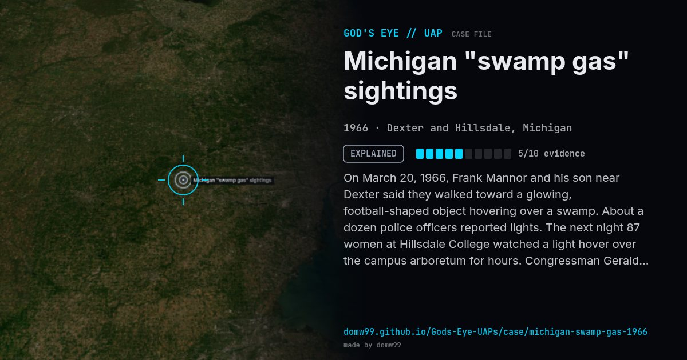

Michigan "swamp gas" sightings

On March 20, 1966, Frank Mannor and his son near Dexter said they walked toward a glowing, football-shaped object hovering over a swamp. About a dozen police officers reported lights. The next night 87 women at Hillsdale College watched a light hover over the campus arboretum for hours. Congressman Gerald Ford called for hearings, which led to the Condon Committee.
Explanation
J. Allen Hynek, the Air Force's scientific consultant, suggested that burning marsh gas might explain some of the lights over the swamps, and Blue Book filed the flap as "marsh gas". The explanation was widely ridiculed. Hynek later said he regretted how it was presented.
What was seen
Shape: Football-shaped object with lights; glowing lights over a swamp
Witnesses: Farm family, a dozen police officers, 87 college students
Duration: Two nights
Browse
- United States
- 1960s
- Explained
- Mass sightings
- Official government documents
- Many independent witnesses
- Photographs
- Police witnesses
- Lights and fireballs